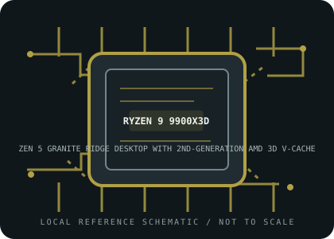

[ INDIVIDUAL CPU COMPONENT // 9000-SERIES DESKTOP ]
AMD Ryzen 9 9900X3D
Zen 5 Granite Ridge desktop with 2nd-generation AMD 3D V-Cache; 12 cores / 24 threads, 4.4 GHz base / up to 5.5 GHz max boost, 128 MB L3 cache, 120 W default TDP. Check exact motherboard firmware and system configuration before installation.

MODEL IDENTIFICATION: This record describes AMD Ryzen 9 9900X3D. Confirm the complete model name, PRO designation and package markings; similarly named Ryzen CPUs can differ in architecture, cache, graphics, power and compatibility.
Verified model specifications
| Cataloged part | AMD Ryzen 9 9900X3D |
|---|---|
| Architecture / family | Zen 5 Granite Ridge desktop with 2nd-generation AMD 3D V-Cache |
| Core / thread count | 12 cores / 24 threads |
| Frequency | 4.4 GHz base / up to 5.5 GHz max boost |
| Cache | 12 MB L2 / 128 MB L3 (140 MB total) |
| Default TDP | 120 W |
| Socket | AMD Socket AM5 |
| Memory | Dual-channel DDR5, up to 5600 MT/s; two memory channels |
| PCI Express | PCIe 5.0; 28 native lanes (24 usable). Actual slot and device support depends on motherboard layout. |
| Integrated graphics | Integrated AMD Radeon Graphics (2 graphics cores); basic display capability, motherboard display output required. |
| Motherboard BIOS compatibility | AM5 board required. Confirm Ryzen 9 9900X3D and the required minimum BIOS/AGESA in the motherboard vendor’s CPU-support list; earlier AM5 boards may require a firmware update. |
Compatibility and service notes
- AM5 board required. Confirm Ryzen 9 9900X3D and the required minimum BIOS/AGESA in the motherboard vendor’s CPU-support list; earlier AM5 boards may require a firmware update.
- Published boost is a maximum, not a guaranteed sustained all-core clock; cooling, board settings, workload and memory configuration affect operation.
- Confirm cooler mounting, power delivery and thermal solution in the motherboard and cooler manuals. Package dimensions are not represented by this schematic.
- Record the motherboard model, BIOS/AGESA version, installed memory, cooler and exact CPU markings when documenting a working system.
Sources & further reading
- AMD — AMD Ryzen 9 9900X3D product specificationsAMD product source for model-level core/thread count, clock, cache, socket, memory, PCIe, graphics and default TDP.
- AMD — Processor specificationsOfficial AMD processor specifications index; match the exact complete product name and suffix.
- AMD — Support and documentationOfficial support resources. Verify the minimum BIOS with the motherboard or system vendor’s CPU support list.
Processor specifications do not guarantee compatibility with every AM5 motherboard or firmware revision. Check the manufacturer’s validated CPU list before installation.